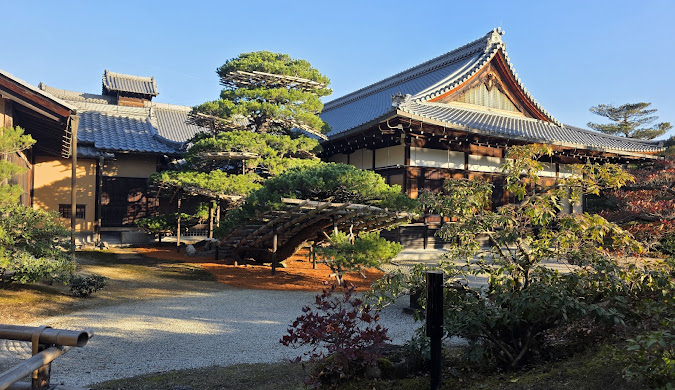
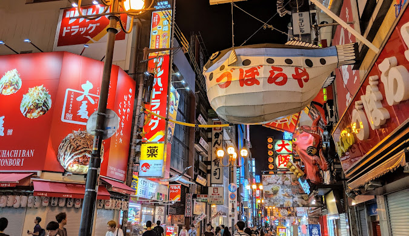
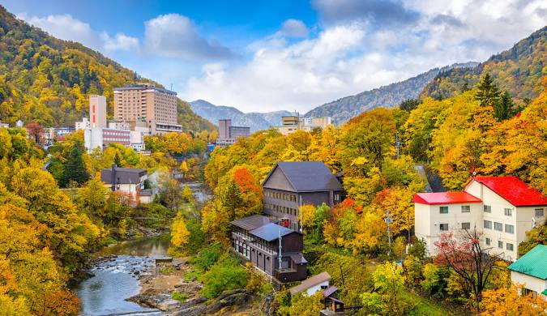
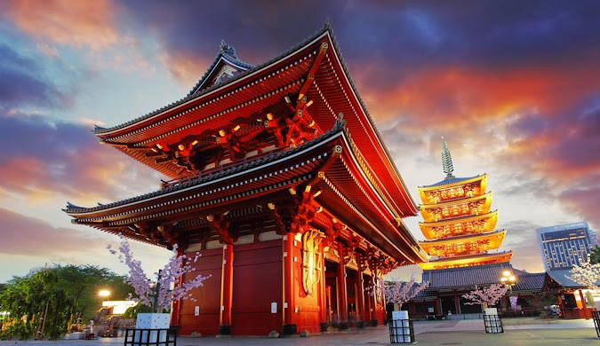

Total Customers
Years of Experience
Total Destinations
Kyoto, once the capital of Japan, is a city on the island of Honshu. It's famous for its numerous classical Buddhist temples, as well as gardens, imperial palaces, Shinto shrines and traditional wooden houses. It’s also known for formal traditions such as kaiseki dining.

Osaka is a vibrant port city known for its modern architecture, nightlife and delicious street food. It is considered Japan’s kitchen and is famous for dishes like takoyaki and okonomiyaki. The city blends historical landmarks with a lively urban culture.

Hokkaido is Japan’s northernmost island, known for its beautiful natural landscapes, ski resorts and hot springs. It offers wide open spaces, flower fields and stunning winter festivals, making it perfect for nature lovers.

Tokyo is Japan’s bustling capital, mixing ultramodern skyscrapers with historic temples. From the busy Shibuya Crossing to the calm Meiji Shrine, Tokyo offers endless entertainment, shopping and cultural experiences.
